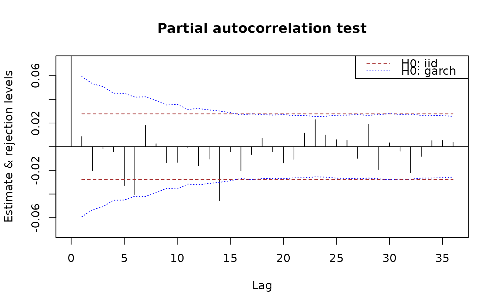
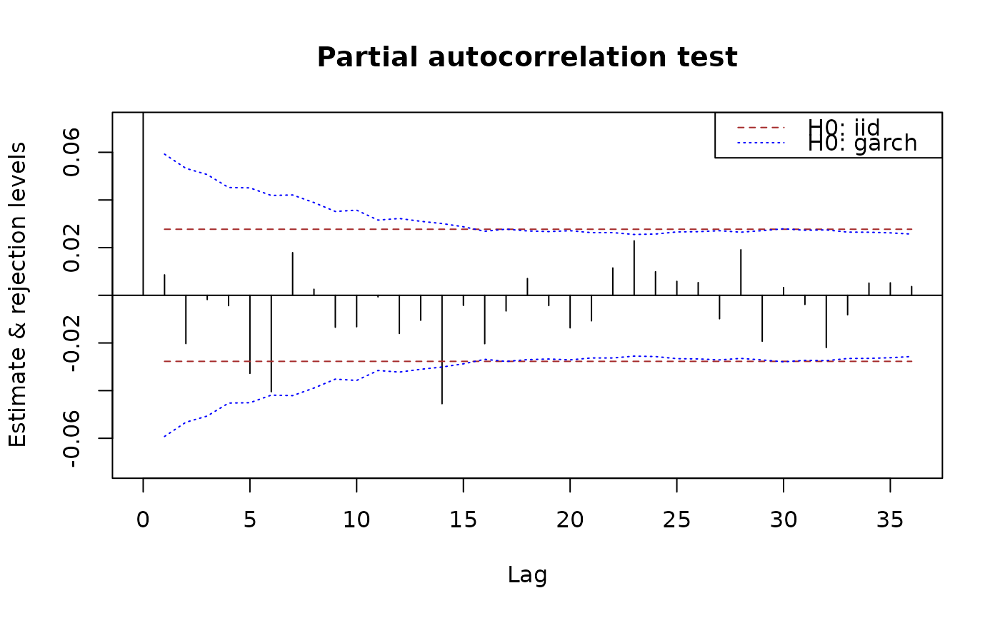
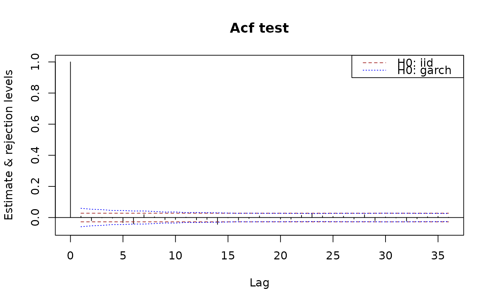
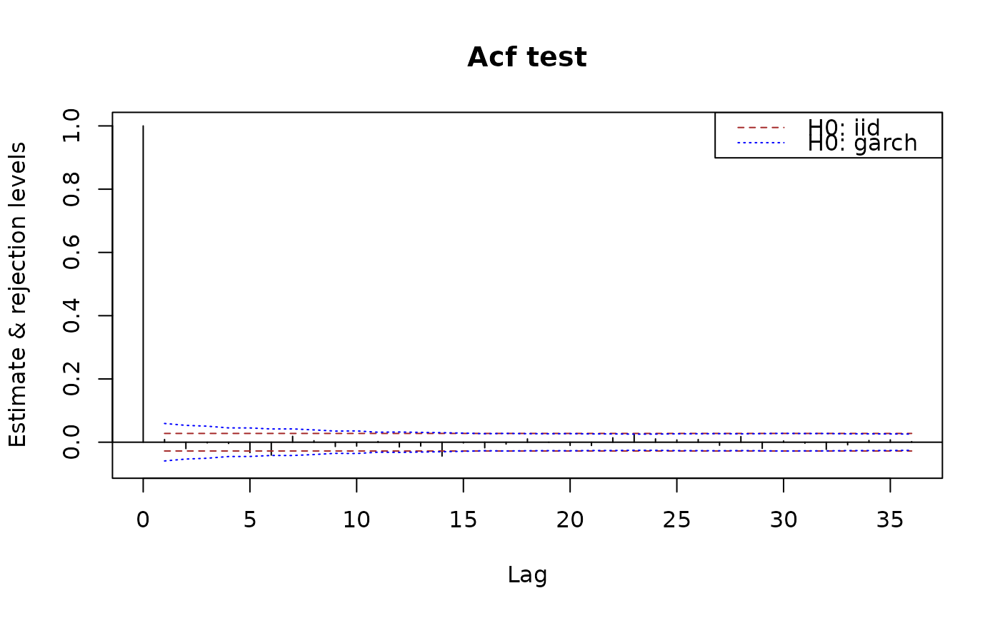

Plot methods in package sarima
plot-methods.RdPlot methods in package sarima.
Methods
signature(x = "SampleAutocorrelations", y = "matrix")signature(x = "SampleAutocorrelations", y = "missing")signature(x = "SamplePartialAutocorrelations", y = "missing")
Examples
n <- 5000
x <- sarima:::rgarch1p1(n, alpha = 0.3, beta = 0.55, omega = 1, n.skip = 100)
x.acf <- autocorrelations(x)
x.acf
#> An object of class "SampleAutocorrelations"
#> Lag_0 Lag_1 Lag_2 Lag_3 Lag_4
#> 1.0000000000 0.0035723443 -0.0018256951 0.0388470409 -0.0117240610
#> Lag_5 Lag_6 Lag_7 Lag_8 Lag_9
#> -0.0116768900 -0.0020101912 0.0236775763 0.0057033828 -0.0033902832
#> Lag_10 Lag_11 Lag_12 Lag_13 Lag_14
#> 0.0262496578 -0.0252716798 -0.0057954801 -0.0069536748 0.0108726032
#> Lag_15 Lag_16 Lag_17 Lag_18 Lag_19
#> -0.0214297825 0.0036369501 0.0116985003 0.0001353020 -0.0194062965
#> Lag_20 Lag_21 Lag_22 Lag_23 Lag_24
#> 0.0095202152 -0.0165509815 -0.0234165363 0.0027785459 -0.0007203403
#> Lag_25 Lag_26 Lag_27 Lag_28 Lag_29
#> 0.0098901072 0.0096767898 0.0206564198 0.0109693267 -0.0157290932
#> Lag_30 Lag_31 Lag_32 Lag_33 Lag_34
#> 0.0138187519 -0.0083579906 -0.0134660088 -0.0119617250 0.0002544484
#> Lag_35 Lag_36
#> -0.0136978677 -0.0123349947
#> Slot n:
#> [1] 5000
#> Slot varnames: <not set>
#> Slot objectname: x
x.pacf <- partialAutocorrelations(x)
x.pacf
#> An object of class "SamplePartialAutocorrelations"
#> Lag_0 Lag_1 Lag_2 Lag_3 Lag_4 Lag_5
#> 1.000000000 0.003572344 -0.001838480 0.038860770 -0.012026657 -0.011456015
#> Lag_6 Lag_7 Lag_8 Lag_9 Lag_10 Lag_11
#> -0.003479612 0.024626068 0.006276332 -0.003436708 0.024262990 -0.025496989
#> Lag_12 Lag_13 Lag_14 Lag_15 Lag_16 Lag_17
#> -0.004559283 -0.008795982 0.012959678 -0.021588832 0.004053899 0.009108852
#> Lag_18 Lag_19 Lag_20 Lag_21 Lag_22 Lag_23
#> 0.002682901 -0.019344298 0.008230891 -0.015827009 -0.021167105 0.002205122
#> Lag_24 Lag_25 Lag_26 Lag_27 Lag_28 Lag_29
#> -0.001433322 0.012823946 0.008217809 0.019870641 0.010366701 -0.013270425
#> Lag_30 Lag_31 Lag_32 Lag_33 Lag_34 Lag_35
#> 0.011210922 -0.007725257 -0.011624373 -0.014380857 -0.001313580 -0.013673024
#> Lag_36
#> -0.010721884
#> Slot n:
#> [1] 5000
#> Slot varnames: <not set>
#> Slot objectname: x
plot(x.acf)
 plot(x.acf, data = x)
plot(x.acf, data = x)
 plot(x.pacf)
plot(x.pacf, data = x)
plot(x.pacf)
plot(x.pacf, data = x)
 plot(x.acf, data = x, main = "Autocorrelation test")
plot(x.acf, data = x, main = "Autocorrelation test")
 plot(x.pacf, data = x, main = "Partial autocorrelation test")

plot(x.acf, ylim = c(NA,1))
plot(x.pacf, data = x, main = "Partial autocorrelation test")

plot(x.acf, ylim = c(NA,1))
 plot(x.acf, ylim.fac = 1.5)
plot(x.acf, ylim.fac = 1.5)
 plot(x.acf, data = x, ylim.fac = 1.5)
plot(x.acf, data = x, ylim.fac = 1.5)
 plot(x.acf, data = x, ylim = c(NA, 1))

plot(x.acf, data = x, ylim = c(NA, 1))
